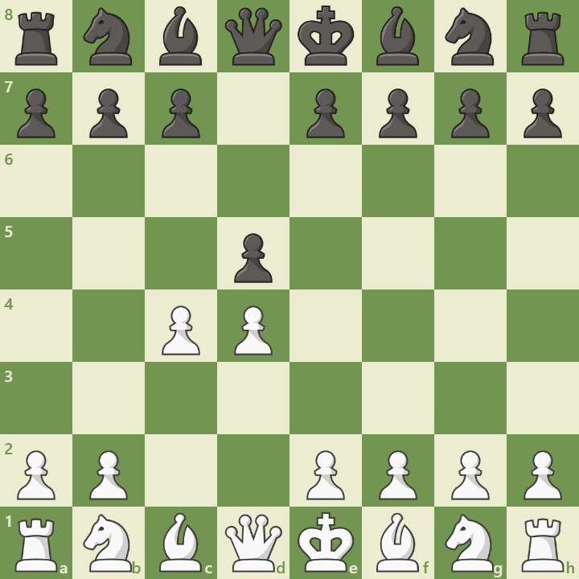

Overview
The Queen’s Gambit is one of the oldest and most respected chess openings, dating back to the 15th century. It begins with:
1. d4 d5 2. c4
White offers the c4 pawn to deflect Black’s central pawn and gain long-term control of the center. Despite the name, it’s not a true gambit—Black cannot hold the pawn without concessions.
“The Queen’s Gambit is the opening of champions—elegant, strategic, and timeless.”
— 365Chess.com
Opening Diagram
This position arises after 1.d4 d5 2.c4. White pressures the d5 pawn and prepares to dominate the center with e3, Nc3, and Nf3.
Main Variations
| Variation | Moves | Style |
|---|---|---|
| Queen’s Gambit Accepted (QGA) | 1.d4 d5 2.c4 dxc4 | Open, tactical |
| Queen’s Gambit Declined (QGD) | 1.d4 d5 2.c4 e6 | Solid, strategic |
| Slav Defense | 1.d4 d5 2.c4 c6 | Counterattacking, resilient |
Strategic Themes
- Control of the center with pawns and minor pieces
- Long-term pressure on Black’s position
- Flexible development and safe king placement
- Transition into rich middlegame structures